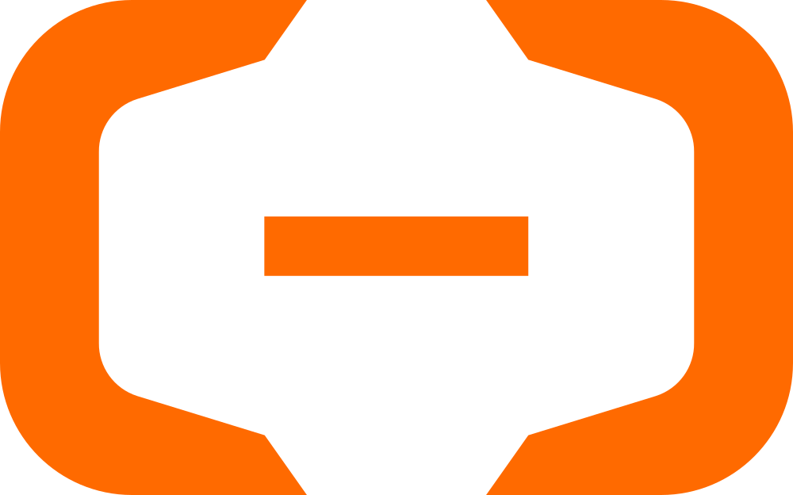

GRS-通用审核系统
检查中...
文本审核
图片审核
批量测试
审核记录
对话
对比审核
审核配置
API文档
词库管理
统计面板
本地模型
插件管理
系统信息
输入待审核文本
上传图片进行审核
点击或拖拽图片到此处
支持 JPG / PNG / WebP（点击图片可放大查看）
文件夹批量扫描 只读模式 · 不改动原文件
递归扫描指定文件夹内的所有图片（jpg / png / webp / gif / bmp，含子文件夹），逐张调用本地视觉模型审核，零 API 费用。扫描过程只读取图片，不会移动、重命名、修改或删除任何原文件；结果仅保存在系统自己的 data 目录。断点续传：已审核过的图片（文件未变化）自动跳过复用结论，中途停止后下次从断点继续；每 10 张自动保存进度。单卡推理为串行，速度约每张数秒。
严格程度 = 拦截阈值缩放：宽松×1.3（更难拦截）· 标准×1.0 · 严格×0.7（更易拦截）。顶栏「严格程度」为全局设置（保存后对机器人生效）；如需为每个违规类别单独精调阈值，请到「系统信息 → 违规阈值配置」。
扫描进度
扫描结果
📁 按审核结果分类导出
将扫描结果中的图片按风险等级分别导出到目标文件夹下的 safe / low / medium / high / critical 子文件夹。
历史扫描任务
预设测试用例
审核记录
点击刷新加载记录
该筛选下暂无记录
模型对话 通过审核接口测试本地模型响应
AI
你好！这里可以快速向模型发送消息并查看回复。消息会经过文本审核流程，适合测试 Prompt 效果和模型表现。
对比审核 由「对比审核套件」插件提供 · 每日凌晨自动运行
已开启
加载中...
图像对比只能处理「审核记录里携带了原始图片路径」的图片；未携带的记录会被跳过并单独计数。
对比记录列表
加载中...
详细对比结果
多重审核 已由拓扑图接管
多重审核已由上方拓扑图接管。请在拓扑画布上增删审核节点、调整汇聚策略——那里是唯一生效的配置入口。
🛡️ 阿里云内容安全配置 ✓ 已保存
加载中...

云端审核配置 本地 + 云端 + 内容安全 多审核模式
按「审核配置」实际拓扑执行（加载中…）
说明：上方「双审模式」是旧引擎遗留开关，流程模式（默认）下不参与判定；真正启用云端请用下方「云端文本审核 / 云端图片审核」开关，通道组合与分歧判定一律以「审核配置」拓扑为准。
云端文本审核
云端图片审核
（本地识图仍用 qwen3-vl:8b-instruct）
额度来源
决定走哪个端点、用哪把 Key 计费
API 凭证
所有模型（Qwen / DeepSeek）共用此 Endpoint 和 API Key
说明：本卡片只控制**云端通道**的开关与模型；某个通道是否参与审核、以及分歧如何判定，**一律由「审核配置」的拓扑决定**：
加载中…
价格单位：元/百万tokens。
注意：公网访问修改配置需要管理员密码。
价格单位：元/百万tokens。
注意：公网访问修改配置需要管理员密码。
从右侧「服务面板」拖入节点；从节点底部圆点按住拖到目标节点顶部圆点即可连线。单击节点打开参数抽屉，单击连线后按
Delete 删除连线，Ctrl+Z 撤销。一个节点连出多条边即表示并行分支；多条分支回到同一点前需先接入汇聚节点。
校验结果（服务端权威）—
试运行（逐节点 trace）
图像审核策略 省 token、泳装/暴露口径、WD14 联动 —— 保存后对下一次审核即时生效
加载中...
发送前缩图：只缩「发给模型」的那份内存字节，
判定缓存：同一张图 + 同一模型 + 同一档位只计费一次（存于
泳装/暴露口径：通过提示词约束视觉模型判定，off = 不注入策略段（历史行为）。
data/image_blobs/ 始终保留原图（取证可复现）。768px 约省 95% 视觉 token。判定缓存：同一张图 + 同一模型 + 同一档位只计费一次（存于
data/audit.db）。泳装/暴露口径：通过提示词约束视觉模型判定，off = 不注入策略段（历史行为）。
API 接口文档
服务地址:
http://localhost:11451
REST API
JSON
审核接口
POST /moderate/text
POST /moderate/image
POST /moderate
管理接口
GET /health
GET /api/logs
POST /api/unload
GET /api/system-stats
GET /api/worddb/status
参考
插件系统
返回字段说明
QQ机器人集成
上下文策略
POST
/api/moderate/text
文本审核
审核单条文本消息是否违规。返回风险等级、违规类别、判定理由和处理建议。
请求参数
| 参数 | 类型 | 必填 | 说明 |
|---|---|---|---|
| text | string | 是 | 待审核文本 |
| userId | string | 否 | 用户ID（记录用） |
| groupId | string | 否 | 群组ID（记录用） |
调用示例
cURL
Koishi
Python
Node.js
curl -X POST http://localhost:11451/api/moderate/text \
-H "Content-Type: application/json" \
-d '{"text": "你好，欢迎加入群聊"}'
import { Context, Schema, Logger } from 'koishi'
const log = new Logger('moderation')
export interface Config {
apiUrl: string
enableModeration: boolean
}
export const Config: Schema = Schema.object({
apiUrl: Schema.string()
.default('http://localhost:11451')
.description('审核服务地址'),
enableModeration: Schema.boolean()
.default(true)
.description('是否启用消息审核'),
})
export function apply(ctx: Context, config: Config) {
// 消息审核中间件
ctx.middleware(async (session, next) => {
if (!config.enableModeration || !session.content?.trim()) {
return next()
}
try {
const result = await ctx.http.post('/api/moderate/text', {
text: session.content,
userId: session.userId,
groupId: session.guildId,
}, { headers: { 'Content-Type': 'application/json' }, endpoint: config.apiUrl })
if (!result.passed) {
log.warn(`[拦截] ${result.risk_level}: ${result.reason}`)
await session.send(`消息已被拦截: ${result.reason}`)
return // 不继续执行后续中间件
}
} catch (err) {
log.error('审核服务异常:', err.message)
// 服务异常时放行，避免影响正常使用
}
return next()
})
}
import requests
resp = requests.post('http://localhost:11451/api/moderate/text', json={
'text': '你好，欢迎加入群聊'
})
result = resp.json()
print(f"通过: {result['passed']}, 风险: {result['risk_level']}")
print(f"类别: {result['categories']}, 理由: {result['reason']}")
const http = require('http');
const data = JSON.stringify({ text: '你好，欢迎加入群聊' });
const req = http.request('http://localhost:11451/api/moderate/text', {
method: 'POST',
headers: { 'Content-Type': 'application/json', 'Content-Length': Buffer.byteLength(data) }
}, (res) => {
let body = '';
res.on('data', (c) => body += c);
res.on('end', () => console.log(JSON.parse(body)));
});
req.write(data); req.end();
POST
/api/moderate/image
图片审核
审核 base64 编码的图片，支持附带文字。需部署视觉模型 (qwen3-vl:8b)。
请求参数
| 参数 | 类型 | 必填 | 说明 |
|---|---|---|---|
| image | string | 是 | base64 图片（含或不含 data: 前缀） |
| text | string | 否 | 附带文字 |
调用示例
cURL
Koishi
curl -X POST http://localhost:11451/api/moderate/image \
-H "Content-Type: application/json" \
-d '{"image": "base64编码的图片数据", "text": "附带文字"}'
// Koishi 图片审核示例
ctx.middleware(async (session, next) => {
// 获取消息中的图片 (img 元素的 src 或 url)
const imgElements = session.elements?.filter(e => e.type === 'img')
if (!imgElements?.length) return next()
for (const el of imgElements) {
// 下载图片并转 base64
const imgBuffer = await ctx.http.get(el.attrs.url, { responseType: 'arraybuffer' })
const base64 = Buffer.from(imgBuffer).toString('base64')
const result = await ctx.http.post('/api/moderate/image', {
image: base64,
text: session.content,
}, { endpoint: config.apiUrl })
if (!result.passed) {
await session.send(`图片被拦截: ${result.reason}`)
return
}
}
return next()
})
POST
/api/moderate
综合审核
同时审核文本和多张图片，返回综合判定结果（取最高风险等级）。
请求参数
| 参数 | 类型 | 必填 | 说明 |
|---|---|---|---|
| text | string | 否 | 文本内容 |
| images | string[] | 否 | base64 图片数组 |
调用示例
cURL
Koishi
curl -X POST http://localhost:11451/api/moderate \
-H "Content-Type: application/json" \
-d '{"text": "文本内容", "images": ["base64图片1", "base64图片2"]}'
// Koishi 综合审核（文本 + 图片）
ctx.middleware(async (session, next) => {
const imgElements = session.elements?.filter(e => e.type === 'img') || []
const images = []
for (const el of imgElements) {
const buf = await ctx.http.get(el.attrs.url, { responseType: 'arraybuffer' })
images.push(Buffer.from(buf).toString('base64'))
}
const result = await ctx.http.post('/api/moderate', {
text: session.content,
images: images.length ? images : undefined,
}, { endpoint: config.apiUrl })
if (!result.passed) {
await session.send(`消息被拦截: ${result.reason}`)
return
}
return next()
})
GET
/health
健康检查
检查审核服务和 Ollama 后端的运行状态。
curl http://localhost:11451/health
GET
/api/logs?count=50
审核日志
查看最近审核日志。count 参数默认 50，最多 500。
curl "http://localhost:11451/api/logs?count=50"
POST
/api/unload
释放显存
手动卸载模型释放显存。body 可选传 model 指定模型名称。
curl -X POST http://localhost:11451/api/unload \
-H "Content-Type: application/json" \
-d '{}'
GET
/api/system-stats
系统监控
获取 CPU 使用率、GPU 利用率/功率/温度、内存/显存占用、模型加载状态。右下角悬浮窗实时展示此数据。
curl http://localhost:11451/api/system-stats
GET
/api/worddb/status
词库状态
查看敏感词库各分类的词条数和风险等级。POST /api/worddb/reload 可热重载词库。
curl http://localhost:11451/api/worddb/status
# 热重载
curl -X POST http://localhost:11451/api/worddb/reload
DOC
返回字段说明
| 字段 | 类型 | 说明 |
|---|---|---|
| passed | boolean | 是否放行 |
| action | string | pass / pass_log / block / block_alert |
| risk_level | string | safe / low / medium / high / critical |
| categories | string[] | 违规类别数组 |
| confidence | float | 置信度 0.0-1.0 |
| reason | string | 判定理由 |
| suggestion | string | 处理建议 |
| precheck_hits | array | 敏感词预检命中（仅命中时返回） |
完整响应示例
{
"passed": false,
"action": "block",
"risk_level": "high",
"categories": ["marketing", "gambling"],
"confidence": 0.92,
"reason": "包含营销引流和赌博诈骗信息",
"suggestion": "拦截并记录",
"type": "text",
"timestamp": "2026-07-29T01:00:00.000Z",
"precheck_hits": [
{ "word": "微信", "category": "marketing", "matched_in": "exact" }
]
}
DEMO
QQ机器人集成示例 (Koishi)
在 Koishi 机器人中集成审核 API 的完整插件示例，支持文本和图片审核。
Koishi 插件
Node.js 原生
// koishi-plugin-moderation/index.ts
import { Context, Schema, Logger } from 'koishi'
const log = new Logger('moderation')
export interface Config {
apiUrl: string
enableText: boolean
enableImage: boolean
blockMessage: string
}
export const Config: Schema = Schema.object({
apiUrl: Schema.string()
.default('http://localhost:11451')
.description('审核服务地址'),
enableText: Schema.boolean()
.default(true).description('启用文本审核'),
enableImage: Schema.boolean()
.default(true).description('启用图片审核'),
blockMessage: Schema.string()
.default('您的消息因违规已被拦截')
.description('拦截提示文本'),
})
export function apply(ctx: Context, config: Config) {
ctx.middleware(async (session, next) => {
const text = session.content?.trim()
if (!text) return next()
try {
// 提取图片元素
const imgEls = session.elements?.filter(e => e.type === 'img') || []
const images: string[] = []
if (config.enableImage && imgEls.length) {
for (const el of imgEls) {
const buf = await ctx.http.get(el.attrs.url, {
responseType: 'arraybuffer'
})
images.push(Buffer.from(buf).toString('base64'))
}
}
// 调用综合审核接口
const result = await ctx.http.post('/api/moderate', {
text: config.enableText ? text : undefined,
images: images.length ? images : undefined,
userId: session.userId,
groupId: session.guildId,
}, {
headers: { 'Content-Type': 'application/json' },
endpoint: config.apiUrl
})
if (!result.passed) {
log.warn(`[拦截] ${result.risk_level}: ${result.reason}`)
await session.send(config.blockMessage)
return // 阻止后续中间件
}
// 可选：低风险记录
if (result.action === 'pass_log') {
log.info(`[记录] ${result.risk_level}: ${text.slice(0, 50)}`)
}
} catch (err) {
log.error('审核服务异常:', err.message)
// 异常时放行，避免影响正常使用
}
return next()
})
}
// Node.js 原生消息审核中间件
const http = require('http');
async function moderateMessage(text, userId, groupId) {
return new Promise((resolve) => {
const data = JSON.stringify({ text, userId, groupId });
const req = http.request('http://localhost:11451/api/moderate/text', {
method: 'POST',
headers: {
'Content-Type': 'application/json',
'Content-Length': Buffer.byteLength(data)
}
}, (res) => {
let body = '';
res.on('data', c => body += c);
res.on('end', () => {
try {
const result = JSON.parse(body);
resolve(result);
} catch {
resolve({ passed: true, error: true });
}
});
});
req.on('error', () => resolve({ passed: true, error: true }));
req.write(data);
req.end();
});
}
// 使用示例
const result = await moderateMessage(msg.text, msg.userId, msg.groupId);
if (!result.passed) {
console.log(`[拦截] ${result.risk_level}: ${result.reason}`);
return { allow: false, reason: result.reason };
}
DOC
上下文与显存策略
服务仅保留内容审核调用，使用独立的审核 keep_alive 策略平衡延迟与显存占用。
| 调用类型 | keep_alive | 说明 |
|---|---|---|
| 内容审核 | 由 config.ollama.moderationKeepAlive 控制 | 审核请求是无状态单次调用；设为 0 时审核完成立即释放模型，设为如 2m 时可覆盖短时突发流量。 |
为缩小攻击面，本服务不再提供通用模型对话或流式对话接口；仅通过审核 API 调用本地模型。
DOC
插件系统（借鉴 cordis 架构）
审核系统内置轻量插件系统，架构借鉴 cordis（服务注入 + 钩子 + 作用域 + 生命周期）。插件放在
plugins/ 目录，可运行时开关、配置、重载。「插件管理」Tab 负责插件的开关 / 重载 / 卸载（每张卡带「配置位置 → 跳转」）；各插件的配置面板（阈值滑块等）已按功能归位到对应 Tab。| 方法 | 路径 | 说明 |
|---|---|---|
| GET | /api/plugins | 插件列表（含状态）+ WD14 服务健康 + 配置 |
| POST | /api/plugins/:name/toggle | 开关插件（body: { enabled: true|false }，运行时生效） |
| POST | /api/plugins/:name/reload | 重载插件（禁用后重新加载） |
| GET | /api/plugins/config | 获取所有插件的配置 schema + 当前值 |
| PUT | /api/plugins/config/:name | 更新插件配置项（body: { key, value }，自动类型校验+范围钳制） |
核心能力：服务注入 ctx.provide/inject、异步钩子 ctx.on/emit、依赖声明 .using、作用域 ctx.scope、事件优先级 order + before 前置钩子、插件配置 ctx.config（自动持久化）。完整开发指南见
docs/plugin-system.md。
🔒
词库管理需要密码
请输入管理密码以编辑敏感词库
密码错误，请重试
敏感词库管理
编辑分类词条与映射表，保存后自动热重载
风险等级:
| 词条数: 0
点击词条右侧 x 删除。系统自动识别同音字/谐音/拆字/混淆字符变体。
字符映射表
今日审核
-
放行
-
拦截
-
拦截率
-
真实 Token
-
云调用
-
平均耗时
-
日开销
-
7日审核趋势
| 日期 | 总量 | 放行 | 拦截 | 拦截率 | Token | 平均耗时 | 开销 |
|---|
今日违规分类分布
点击任一类可查看该类违规内容
模型开销（近 7 日）
本地模型管理 上传 GGUF 文件并导入到 Ollama
检查中...
当前文本审核模型
加载中...
当前视觉（图片）审核模型
加载中...
✅ 点击下方按钮切换模型，立即生效，无需重启服务
已安装的本地模型
加载中...
从 Ollama 仓库拉取官方模型
快捷：
上传 GGUF 模型文件
📦
拖拽 GGUF 文件到此处，或点击选择
支持 .gguf 格式的模型文件
上传中...
导入到 Ollama
使用说明：
1. 上传 GGUF 模型文件到 models 目录
2. 填写模型名称（格式：名称:标签，如 qwen3:14b）
3. 点击「导入到 Ollama」创建模型
4. 导入成功后可设为默认模型
注意：无需本地模型时，可直接使用云端审核模式。
1. 上传 GGUF 模型文件到 models 目录
2. 填写模型名称（格式：名称:标签，如 qwen3:14b）
3. 点击「导入到 Ollama」创建模型
4. 导入成功后可设为默认模型
注意：无需本地模型时，可直接使用云端审核模式。
插件管理 可插拔审核扩展（借鉴 cordis 架构）：开关 / 重载 / 卸载；配置面板已按功能归位到对应 Tab
加载中...
插件开关为「运行时」生效，无需重启服务。禁用插件后其服务与钩子立即移除，重新启用即时恢复。
配置改动（阈值滑块等）自动保存到
配置改动（阈值滑块等）自动保存到
data/plugin-config.json，重启不丢失。
今日审核统计
加载中...
违规阈值配置 AI对每类违规独立打分0-100，超过阈值则触发对应动作
加载中...
说明：记录阈值 = AI分数达到此值时放行并记录；拦截阈值 = AI分数达到此值时直接拦截。
设为 0 = 该类别不拦截（完全放行）。滑动条越往右越严格。
推荐初始值：abuse(辱骂) 记录 20 / 拦截 50；political(涉政) 记录 30 / 拦截 70。
设为 0 = 该类别不拦截（完全放行）。滑动条越往右越严格。
推荐初始值：abuse(辱骂) 记录 20 / 拦截 50；political(涉政) 记录 30 / 拦截 70。
实时系统监控 每5秒自动刷新
加载中...
显存占用与文本长度上限
加载中...
敏感词库状态
加载中...
敏感词库文件位置:
请手动编辑该文件，在对应分类的 words 数组中添加敏感词。修改后点击"热重载词库"即可生效，无需重启服务。
系统支持自动识别同音字/谐音（基于拼音匹配）、拆字合并、数字谐音、混淆字符替换。
data/sensitive_words.json请手动编辑该文件，在对应分类的 words 数组中添加敏感词。修改后点击"热重载词库"即可生效，无需重启服务。
系统支持自动识别同音字/谐音（基于拼音匹配）、拆字合并、数字谐音、混淆字符替换。
审核记录存储 JSONL 权威源 · SQLite 投影（可选）
加载中...
审核记录始终以 JSONL（
data/audit_records/）为权威源；启用双写时另存一份 SQLite 投影（data/audit.db）便于查询。若显示「纯 JSONL」，说明当前 Node 不满足 node:sqlite 要求（需 ≥ 22.5）。